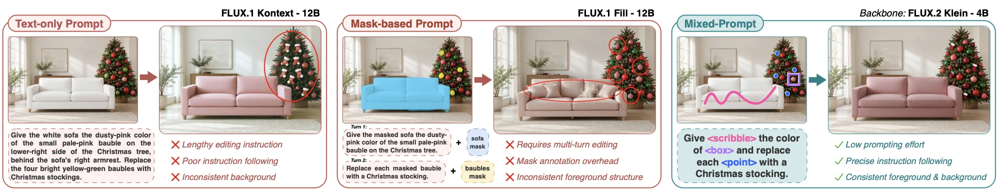
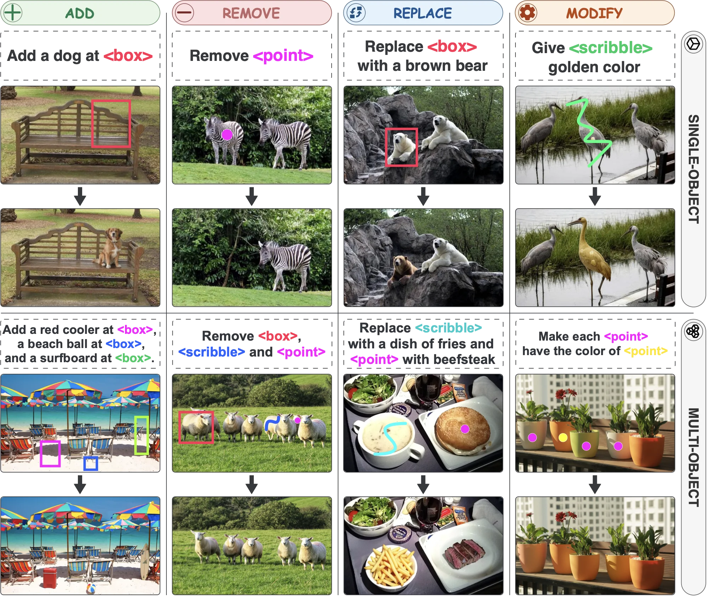
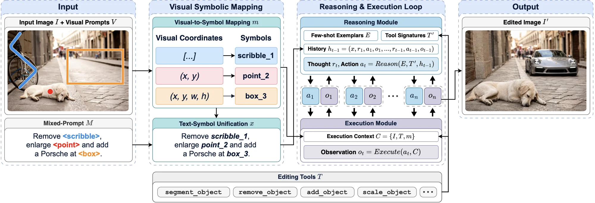
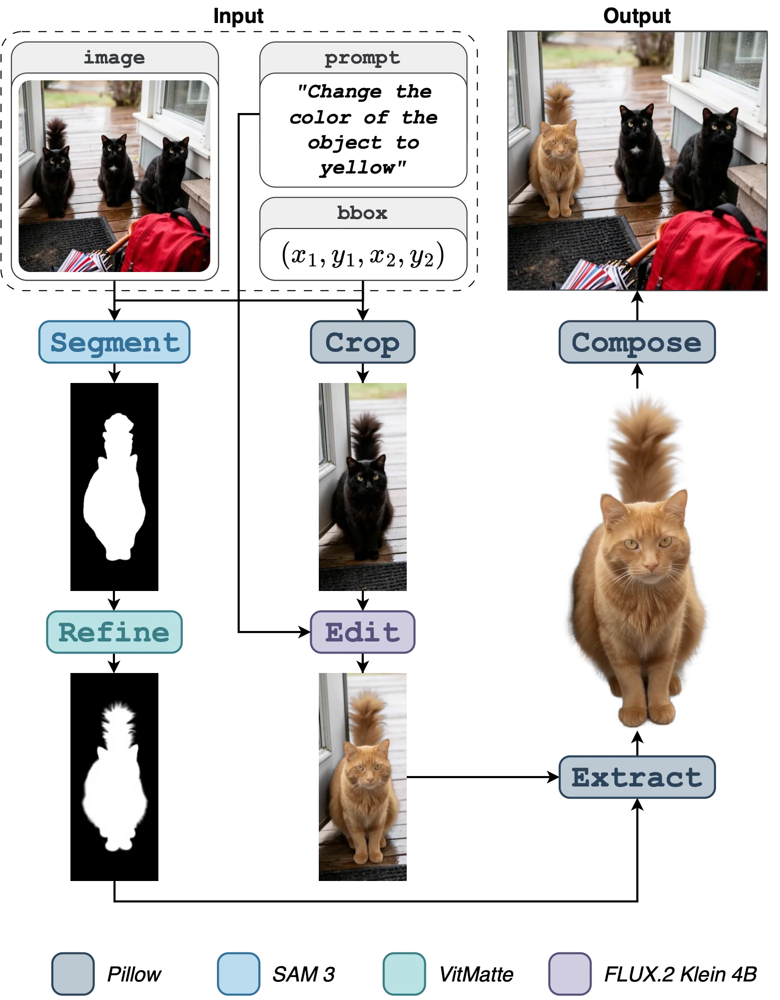
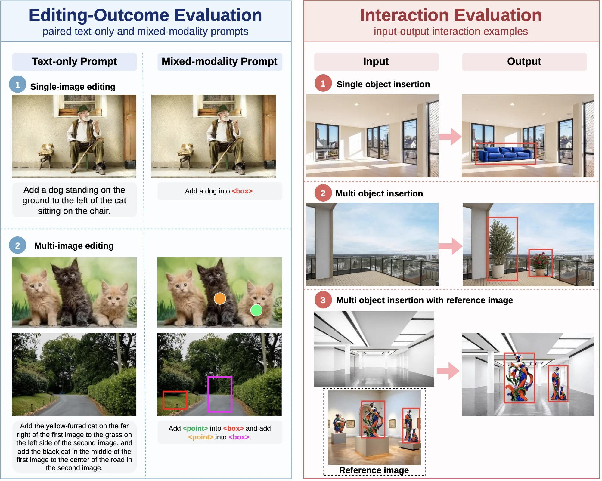
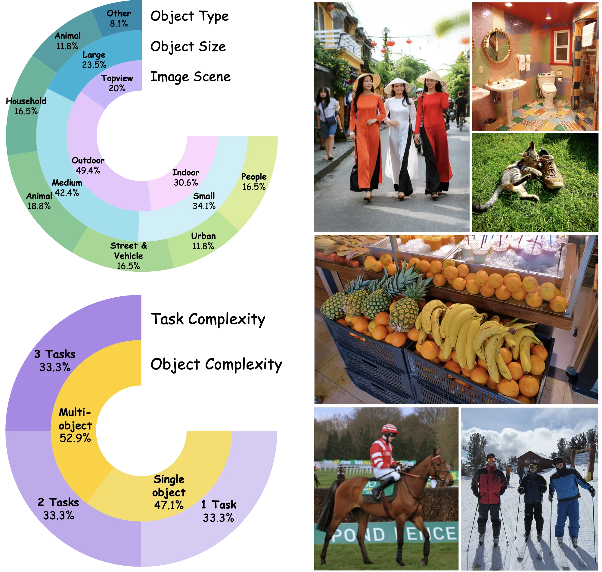
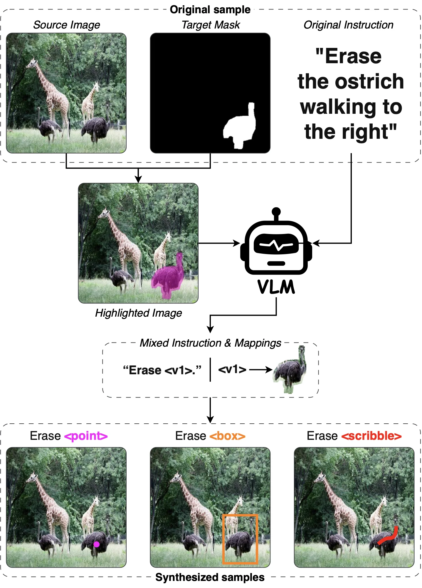
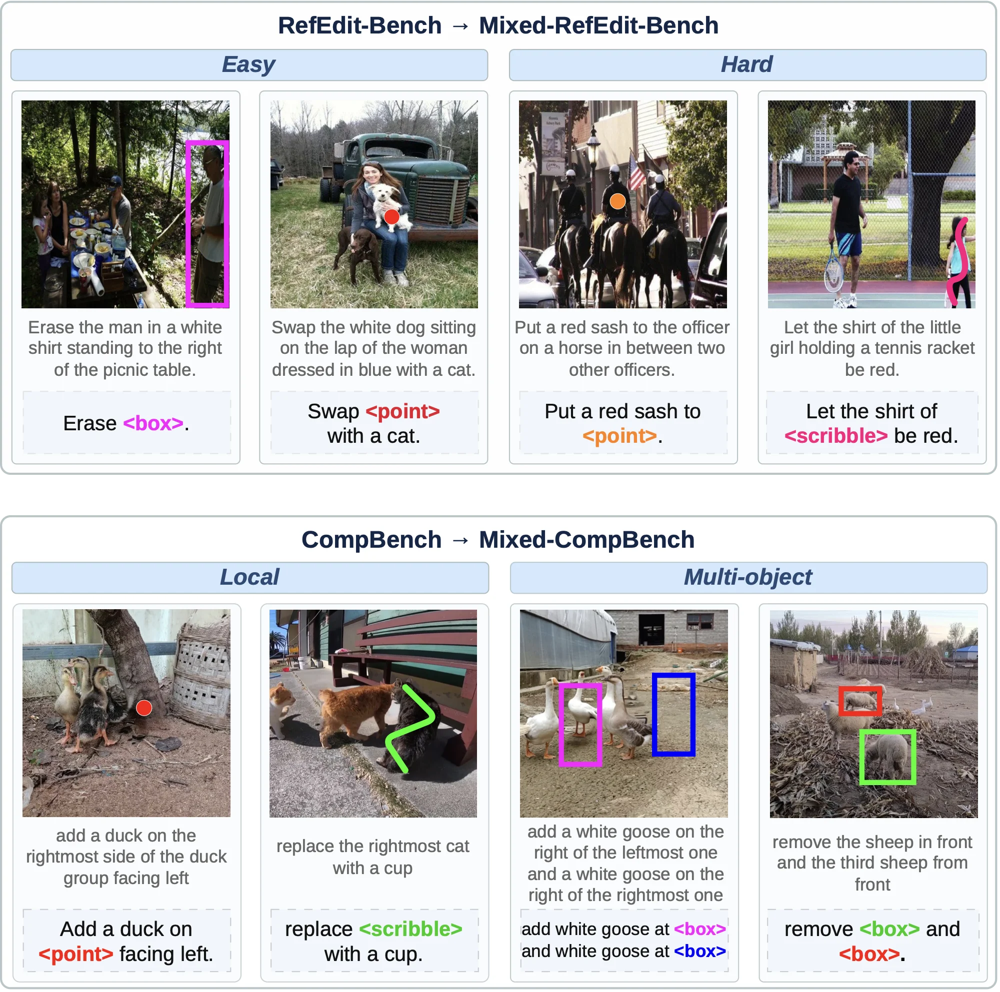
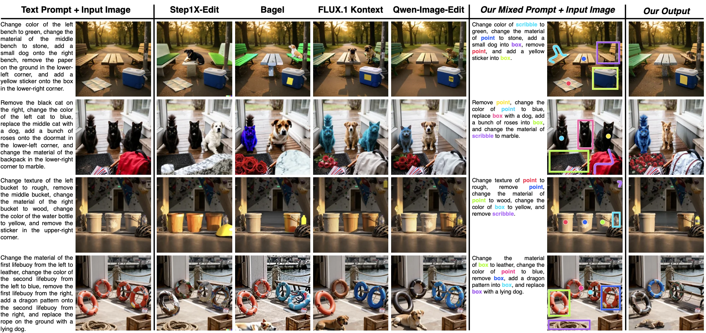
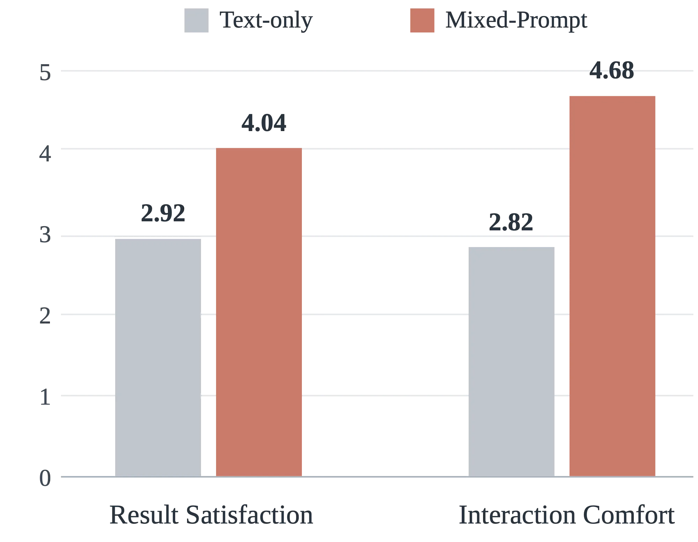

Instruction-based image editing has advanced rapidly with the emergence of large vision-language models (LVLMs). However, accurately expressing editing intentions remains challenging, particularly in complex scenes containing multiple similar objects. Text-only prompts often require lengthy spatial descriptions to identify editing targets, while mask-based approaches demand precise manual annotations.
To address these limitations, we introduce Mixed-Prompt, a mixed-modality prompting paradigm for compositional image editing that enables users to express editing intentions by naturally combining textual instructions with visual references, including points, bounding boxes, and scribbles. Unlike conventional approaches that primarily use visual prompts as spatial constraints, our paradigm treats them as explicit, referable visual entities that can be directly associated with editing operations within a unified instruction.
We develop a framework that transforms heterogeneous visual references into structured symbolic representations, employs LLM-based reasoning to generate executable editing programs, and integrates modular editing tools for controllable and compositional image manipulation. We further construct mixed-modality benchmark extensions and conduct comprehensive evaluations, including human studies and quantitative experiments. Experimental results show relative improvements of 14.4%–35.9% in VIEScore on Mixed-RefEdit and 8.2%–18.2% in EditScore on Mixed-CompBench, reduce prompt length by about 54%, and enable roughly 3× faster prompting, with particularly notable gains in complex multi-object scenes.

The Mixed-Prompt Edit framework has three components: (1) Mixed-Prompt Input, (2) Visual Symbolic Mapping, and (3) Reasoning and
Execution Loop. Each visual prompt is assigned a symbolic identifier of the form <prompt type>_<id>,
such as scribble_1, point_2, or box_3, and stored in a symbol table that
maps each identifier to its visual prompt. The reasoning module is a text-only LLM that receives few-shot exemplars,
tool signatures, and the history of prior steps. It never receives raw images, coordinates, or masks. The execution
module resolves each identifier to its region when a tool is invoked, and returns an observation that is appended to
the history until the edit is complete.


edit_object tool. A user-specified visual reference
is resolved to the target object, which is segmented and cropped for localized editing. The resulting content undergoes
mask refinement and harmonization before being composited back into the original image. The implementation combines
SAM3, FLUX.2 Klein 4B, VitMatte, PtcNet, and Python Pillow.
Mixed-Modality Compositional Editing. Multiple visual references and editing operations can be combined in a
single instruction. For example, "Remove <point>, add a cat at <box>, and enlarge <scribble> by 20%"
is unified into symbols such as point_1, box_2, and scribble_3. Each symbol is
resolved to its own mask, and the resulting commands may run together or across successive loop steps.
Feedback-Driven Execution Error Recovery. The observation from every executed action is appended to the history. Failed actions, such as invalid tool calls or missing parameters, are corrected in the next step. The feedback does not detect incorrect object selection or unsatisfactory image quality.
Modular Extensibility. Each editing operation is exposed through a standardized tool interface, so an editing backend can be replaced or extended without changing the prompt unification and planning structure.
We construct a human-evaluation collection and extend two existing benchmarks with visual references. For editing-outcome evaluation, 36 images and 30 editing instructions are used. For interaction evaluation, 52 images and 45 editing tasks are used, and each task is completed by three participants under both conditions, giving 270 sessions. Mixed-RefEdit extends RefEdit (Easy and Hard cases), and Mixed-CompBench extends CompBench (Local and Multi-object). Each instruction has paired text-only and mixed-modality forms.
The reference-entity annotations (grounding spans, boxes, masks, and crops) are available on Hugging Face.




Ours--Mixed achieves the highest semantic consistency and overall scores in both difficulty levels. On Hard cases, it improves the overall score by 35.9% over RefEdit-SD3 and by 14.4% over Ours--Text. Ours--Text loses 0.93 points in semantic consistency from Easy to Hard, whereas Ours--Mixed loses only 0.10 points. Ours--Mixed does not outperform all competing methods in perceptual quality, since target identification and visual quality depend on different factors.
| Method | Easy | Hard | ΔSCavg | ||||
|---|---|---|---|---|---|---|---|
| SCavg ↑ | PQavg ↑ | Oavg ↑ | SCavg ↑ | PQavg ↑ | Oavg ↑ | ||
| InstructPix2Pix | 3.52 | 5.66 | 2.82 | 3.80 | 6.02 | 3.22 | 0.28 |
| MagicBrush | 4.18 | 6.10 | 3.67 | 4.11 | 6.16 | 3.56 | -0.07 |
| UltraEdit | 3.68 | 6.98 | 3.40 | 2.93 | 6.23 | 2.59 | -0.75 |
| HIVE | 3.15 | 5.26 | 2.42 | 3.22 | 5.52 | 2.47 | 0.07 |
| HQ-Edit | 2.58 | 5.39 | 2.37 | 2.95 | 5.21 | 2.60 | 0.37 |
| CosXLEdit | 3.20 | 6.73 | 2.88 | 3.44 | 6.65 | 2.88 | 0.24 |
| PnP | 4.25 | 5.59 | 3.55 | 2.45 | 5.62 | 2.27 | -1.80 |
| InstructDiffusion | 4.16 | 4.71 | 3.31 | 4.09 | 4.94 | 3.16 | -0.07 |
| OmniEdit | 4.18 | 6.15 | 3.68 | 4.07 | 6.28 | 3.53 | -0.11 |
| InstructDiffusion-HA | 5.01 | 5.88 | 4.21 | 4.56 | 6.10 | 3.75 | -0.45 |
| RefEdit | 5.47 | 5.85 | 4.68 | 4.51 | 6.48 | 3.93 | -0.96 |
| RefEdit-SD3 | 5.46 | 6.36 | 4.99 | 4.47 | 6.21 | 3.98 | -0.99 |
| Ours--Text | 7.85 | 4.36 | 5.36 | 6.92 | 4.39 | 4.73 | -0.93 |
| Ours--Mixed | 7.87 | 4.53 | 5.47 | 7.77 | 4.50 | 5.41 | -0.10 |
Ours--Mixed achieves the highest LC-T, PF, PQ, and Overall scores. Compared with Ours--Text, it improves LC-T by 1.47 points and PF by 0.80 points, and raises the Overall score by about 8.3%. Its Overall score of 7.70 exceeds the strongest external baseline, FLUX.1 Kontext (6.51), by about 18.3%. Ours--Text reaches a slightly higher Consistency score (9.44 vs. 9.11), which may reflect differences in the underlying generative backends.
| Method | LC-T ↑ | PF ↑ | Consistency ↑ | PQ ↑ | Overall ↑ |
|---|---|---|---|---|---|
| Step1X-Edit | 20.459 | 6.28 | 7.94 | 5.43 | 5.05 |
| BAGEL | 20.856 | 8.06 | 8.80 | 5.94 | 6.24 |
| FLUX.1 Kontext | 21.020 | 8.24 | 8.62 | 6.16 | 6.51 |
| Qwen-Image-Edit | 20.722 | 8.50 | 8.32 | 6.01 | 6.39 |
| Ours--Text | 20.1 | 8.36 | 9.44 | 7.04 | 7.11 |
| Ours--Mixed | 21.57 | 9.16 | 9.11 | 7.09 | 7.70 |

Evaluated on the Local and Multi-object categories of Mixed-CompBench using the CompBench protocol and the background-preservation metrics SSIM, PSNR, and LPIPS. Ours--Mixed outperforms Ours--Text on all metrics in both categories. On Local tasks, PSNR increases by 4.44 dB and LPIPS decreases by about 73.8%. Compared with the strongest external baseline on Multi-object tasks, PSNR increases by about 4.96 dB over BAGEL, and LPIPS decreases by about 54.2% relative to FLUX.1 Kontext.
| Method | Local | Multi-object | ||||
|---|---|---|---|---|---|---|
| SSIM ↑ | PSNR ↑ | LPIPS ↓ | SSIM ↑ | PSNR ↑ | LPIPS ↓ | |
| InstructPix2Pix | 0.706 | 21.828 | 0.124 | 0.671 | 20.534 | 0.152 |
| MagicBrush | 0.741 | 23.429 | 0.090 | 0.738 | 24.176 | 0.081 |
| HIVE | 0.641 | 19.903 | 0.198 | 0.624 | 19.896 | 0.210 |
| SmartEdit-7B | 0.761 | 24.389 | 0.074 | 0.745 | 24.886 | 0.076 |
| MGIE | 0.639 | 18.204 | 0.257 | 0.500 | 15.380 | 0.354 |
| CosXL-Edit | 0.712 | 20.809 | 0.148 | 0.698 | 21.068 | 0.153 |
| HQ-Edit | 0.411 | 11.768 | 0.428 | 0.432 | 13.032 | 0.400 |
| UltraEdit | 0.741 | 22.932 | 0.143 | 0.732 | 22.725 | 0.152 |
| AnyEdit | 0.716 | 22.812 | 0.124 | 0.710 | 23.493 | 0.116 |
| GoT | 0.889 | 24.675 | 0.067 | 0.842 | 22.486 | 0.108 |
| Step1X-Edit | 0.882 | 23.372 | 0.078 | 0.886 | 23.782 | 0.078 |
| BAGEL | 0.935 | 27.692 | 0.045 | 0.932 | 26.849 | 0.051 |
| FLUX.1 Kontext | 0.941 | 25.613 | 0.050 | 0.952 | 26.278 | 0.048 |
| Qwen-Image-Edit | 0.892 | 24.968 | 0.072 | 0.826 | 23.492 | 0.103 |
| Ours--Text | 0.949 | 30.479 | 0.042 | 0.961 | 30.046 | 0.024 |
| Ours--Mixed | 0.983 | 34.920 | 0.011 | 0.973 | 31.81 | 0.022 |
Two studies compare text-only prompting with ChatGPT-4 against the mixed-modality system. Stage 1 evaluates editing-intention fidelity and user preference with 20 human evaluators (aged 19–40) based on generated editing results. Stage 2 evaluates prompting time, result satisfaction, and interaction comfort during direct interaction with 15 participants. Both conditions differ in prompting interface and underlying editing architecture, so the comparison assesses the complete systems rather than visual prompting alone.
| Evaluation Metric | Text-only | Mixed-Prompt |
|---|---|---|
| Editing Intention Accuracy (%) | 79.23 | 98.67 |
| Output Satisfaction (1–5) | 3.20 | 4.85 |
| User Preference Rate (%) | 15 | 85 |
| Category | Setting | Text-only (s) | Mixed-Prompt (s) |
|---|---|---|---|
| Task Complexity | 1 task | 24.3 | 8.17 |
| 2 tasks | 20.25 | 9.48 | |
| 3 tasks | 44.76 | 9.45 | |
| Scene Complexity | Single-object | 20.87 | 9.47 |
| Multi-object | 35.9 | 8.72 | |
| Editing Operation | Object Removal | 37.86 | 9.97 |
| Object Addition | 23.58 | 9.95 | |
| Object Replacement | 21.93 | 8.69 | |
| Object Transformation | 23.94 | 8.03 |
Averaged across the nine settings, prompting time decreases from 28.15 to 9.10 seconds, a 3.1-fold improvement (67.7% reduction). Result Satisfaction rises from 2.92 to 4.04, and Interaction Comfort rises from 2.82 to 4.68.

Instruction length is measured in words for text-only instructions and in representational units for mixed-modality instructions, where each symbolic visual reference counts as one unit. Mixed-modality prompting reduces instruction length by about 54% across the evaluated benchmarks.
| Benchmark | Original Words | Mixed Units | Units Removed | Reduction |
|---|---|---|---|---|
| RefEdit Easy | 11.82 | 4.89 | 6.93 | 58.63% |
| RefEdit Hard | 13.14 | 4.78 | 8.36 | 63.62% |
| CompBench Local | 9.97 | 4.66 | 5.31 | 53.26% |
| CompBench Multi-object | 13.42 | 5.89 | 7.53 | 56.11% |
@misc{duongdinh2026mixedprompt,
title = {Mixed-Prompt: Mixing Text and Visual Prompts for Compositional Image Editing},
author = {Duong Dinh, Phuong-Dao and Le, Tin-Nghia and Nguyen, Vinh-Tiep},
year = {2026},
note = {Preprint}
}